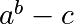
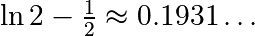
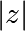
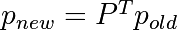

1.3.5. Some exercises¶
1.3.5.1. Array manipulations¶
Form the 2-D array (without typing it in explicitly):
[[1, 6, 11], [2, 7, 12], [3, 8, 13], [4, 9, 14], [5, 10, 15]]
and generate a new array containing its 2nd and 4th rows.
Divide each column of the array:
>>> import numpy as np >>> a = np.arange(25).reshape(5, 5)
elementwise with the array
b = np.array([1., 5, 10, 15, 20]). (Hint:np.newaxis).Harder one: Generate a 10 x 3 array of random numbers (in range [0,1]). For each row, pick the number closest to 0.5.
Use
absandargminto find the columnjclosest for each row.Use fancy indexing to extract the numbers. (Hint:
a[i,j]– the arrayimust contain the row numbers corresponding to stuff inj.)
1.3.5.2. Picture manipulation: Framing a Face¶
Let’s do some manipulations on NumPy arrays by starting with an image
of a raccoon. scipy provides a 2D array of this image with the
scipy.datasets.face function:
>>> import scipy as sp
>>> face = sp.datasets.face(gray=True) # 2D grayscale image
Here are a few images we will be able to obtain with our manipulations: use different colormaps, crop the image, change some parts of the image.

Let’s use the imshow function of matplotlib to display the image.
>>> import matplotlib.pyplot as plt >>> face = sp.datasets.face(gray=True) >>> plt.imshow(face) <matplotlib.image.AxesImage object at 0x...>
- The face is displayed in false colors. A colormap must be
specified for it to be displayed in grey.
>>> plt.imshow(face, cmap=plt.cm.gray) <matplotlib.image.AxesImage object at 0x...>
- Create an array of the image with a narrower centeringfor example,
remove 100 pixels from all the borders of the image. To check the result, display this new array with
imshow.>>> crop_face = face[100:-100, 100:-100]
- We will now frame the face with a black locket. For this, we
need to create a mask corresponding to the pixels we want to be black. The center of the face is around (660, 330), so we defined the mask by this condition
(y-300)**2 + (x-660)**2>>> sy, sx = face.shape >>> y, x = np.ogrid[0:sy, 0:sx] # x and y indices of pixels >>> y.shape, x.shape ((768, 1), (1, 1024)) >>> centerx, centery = (660, 300) # center of the image >>> mask = ((y - centery)**2 + (x - centerx)**2) > 230**2 # circle
then we assign the value 0 to the pixels of the image corresponding to the mask. The syntax is extremely simple and intuitive:
>>> face[mask] = 0 >>> plt.imshow(face) <matplotlib.image.AxesImage object at 0x...>
- Follow-up: copy all instructions of this exercise in a script called
face_locket.pythen execute this script in IPython with%run face_locket.py.Change the circle to an ellipsoid.
1.3.5.3. Data statistics¶
The data in populations.txt
describes the populations of hares and lynxes (and carrots) in
northern Canada during 20 years:
>>> data = np.loadtxt('data/populations.txt')
>>> year, hares, lynxes, carrots = data.T # trick: columns to variables
>>> import matplotlib.pyplot as plt
>>> plt.axes([0.2, 0.1, 0.5, 0.8])
<Axes: >
>>> plt.plot(year, hares, year, lynxes, year, carrots)
[<matplotlib.lines.Line2D object at ...>, ...]
>>> plt.legend(('Hare', 'Lynx', 'Carrot'), loc=(1.05, 0.5))
<matplotlib.legend.Legend object at ...>
Computes and print, based on the data in populations.txt…
The mean and std of the populations of each species for the years in the period.
Which year each species had the largest population.
Which species has the largest population for each year. (Hint:
argsort& fancy indexing ofnp.array(['H', 'L', 'C']))Which years any of the populations is above 50000. (Hint: comparisons and
np.any)The top 2 years for each species when they had the lowest populations. (Hint:
argsort, fancy indexing)Compare (plot) the change in hare population (see
help(np.gradient)) and the number of lynxes. Check correlation (seehelp(np.corrcoef)).
… all without for-loops.
Solution: Python source file
1.3.5.4. Crude integral approximations¶
Write a function f(a, b, c) that returns . Form
a 24x12x6 array containing its values in parameter ranges [0,1] x
[0,1] x [0,1].
Approximate the 3-d integral

over this volume with the mean. The exact result is:  — what is your relative error?
(Hints: use elementwise operations and broadcasting.
You can make np.ogrid give a number of points in given range
with np.ogrid[0:1:20j].)
Reminder Python functions:
def f(a, b, c):
return some_result
Solution: Python source file
1.3.5.5. Mandelbrot set¶

Write a script that computes the Mandelbrot fractal. The Mandelbrot iteration:
N_max = 50
some_threshold = 50
c = x + 1j*y
z = 0
for j in range(N_max):
z = z**2 + c
Point (x, y) belongs to the Mandelbrot set if  <
some_threshold.
Do this computation by:
Construct a grid of c = x + 1j*y values in range [-2, 1] x [-1.5, 1.5]
Do the iteration
Form the 2-d boolean mask indicating which points are in the set
Save the result to an image with:
>>> import matplotlib.pyplot as plt >>> plt.imshow(mask.T, extent=[-2, 1, -1.5, 1.5]) <matplotlib.image.AxesImage object at ...> >>> plt.gray() >>> plt.savefig('mandelbrot.png')
Solution: Python source file
1.3.5.6. Markov chain¶

Markov chain transition matrix P, and probability distribution on
the states p:
0 <= P[i,j] <= 1: probability to go from stateito statejTransition rule: 
all(sum(P, axis=1) == 1),p.sum() == 1: normalization
Write a script that works with 5 states, and:
Constructs a random matrix, and normalizes each row so that it is a transition matrix.
Starts from a random (normalized) probability distribution
pand takes 50 steps =>p_50Computes the stationary distribution: the eigenvector of
P.Twith eigenvalue 1 (numerically: closest to 1) =>p_stationary
Remember to normalize the eigenvector — I didn’t…
Checks if
p_50andp_stationaryare equal to tolerance 1e-5
Toolbox: np.random, @, np.linalg.eig,
reductions, abs(), argmin, comparisons, all,
np.linalg.norm, etc.
Solution: Python source file